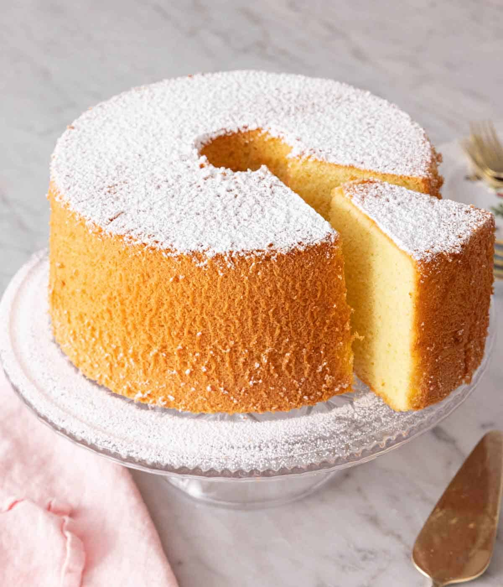
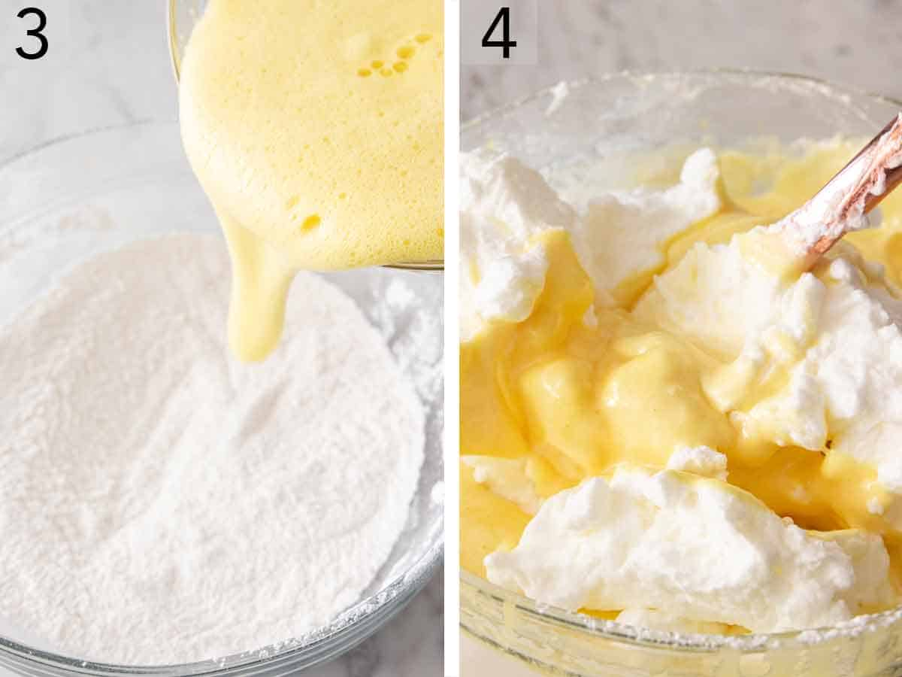
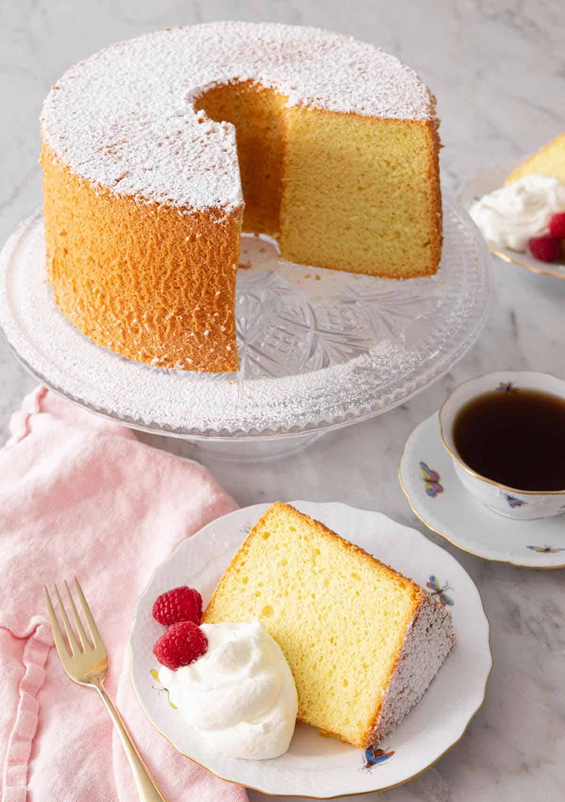

Chiffoncake
There’s nothing better than enjoying a slice of chiffon cake. It has a fantastic cloudlike texture that just melts in your mouth. At first glance, this airy sponge-like cake may seem challenging to make, but this cake is quite straightforward. With my step-by-step guide, you’ll have a tall and fluffy chiffon cake ready in no time. For another cake recipe that you can serve from holidays to birthdays, try my easy yellow cake, zebra cake, or homemade funfetti cake.
Ingredients
Preparation Time 10 Min.
Cook Time 50 Min.
Cake flour
— chiffon cake uses cake flour for a lighter crumb as it’s lighter and finer than standard all-purpose flour. The cake flour will keep your cake tender and soft.Baking powder
— check the expiry date to make sure you’re using fresh baking powder.Eggs
— the egg whites and yolks need to be separated for this cake. Whipping the egg whites into a meringue helps keep the cake light and delicate as well as help lift the cake as it bakes.Vegetable oil
— the oil adds flavor, moisture, and improves the texture of the cake. It’s the secret to getting that melt-in-your-mouth texture! As oil doesn’t solidify at room temperature, the cake stays moist even when cold.Cream of tartar
— half a teaspoon may not seem like a lot but don’t skip the cream of tartar! It helps stabilize the egg whites, so the cake’s light crumb is sturdy as well.- 1¾ cups cake flour (210g)
- 1¼ cups granulated sugar (250g)
- 1 tablespoon baking powder
- ¾ teaspoon salt
- 7 large egg yolks room temperature
- ¾ cup cold water 180mL
- ½ cup vegetable oil (120mL)
- 2 teaspoons vanilla extract
- 7 large eggs whites room temperature
- ½ teaspoon cream of tartar
HOW TO MAKE CHIFFON CAKE
Instructions
-
Position an oven rack to the lowest level and preheat the oven to 325F.
-
In a large bowl, sift together the flour, sugar, baking powder, and salt. In a medium bowl, whisk together egg yolks, water, oil, and vanilla until pale and frothy, about 30 seconds. Add egg yolk mixture to flour mixture, whisking until well combined.
-
In the bowl of a stand mixer fitted with a whisk attachment, beat the egg whites and cream of tartar on medium-high speed until stiff peaks form, about 6 minutes. Fold one-fourth of the egg whites into the flour mixture, until just combined. Gently fold in the remaining egg whites. Spoon batter into an ungreased 10-inch tube pan. Run a butter knife gently through the batter to release any potential air pockets.
Bake on the lowest rack for 1 hour or until a wooden pick inserted in the center comes out clean. (Take should spring back when gently poked with your finger.) Immediately invert the pan onto a wire rack and let the cake cool completely in the pan. When cooled, gently run a knife around the edges of the pan to release the cake. Place the cake on a cake stand and garnish with confectioners’ sugar, if desired.
-
Bon appetit!
-
-
Nutrition
Calories: 326kcal | Carbohydrates: 42g | Protein: 7g | Fat: 14g | Saturated Fat: 3g | Polyunsaturated Fat: 7g | Monounsaturated Fat: 4g | Trans Fat: 1g | Cholesterol: 129mg | Sodium: 347mg | Potassium: 99mg | Fiber: 1g | Sugar: 25g | Vitamin A: 172IU | Calcium: 91mg | Iron: 1mg